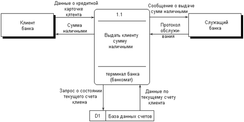

2.1. Предыстория. Математические основы
Представление различных понятий окружающего нас мира при помощи графической символики уходит своими истоками в глубокую древность. В качестве примеров можно привести условные обозначения знаков Зодиака, магические символы различных оккультных доктрин, графические изображения геометрических фигур на плоскости и в пространстве. Важным достоинством той или иной графической нотации является возможность образного закрепления содержательного смысла или семантики отдельных понятий, что существенно упрощает процесс общения между посвященными в соответствующие теории и идеологии.
Как одну из наиболее известных систем графических символов, оказавших непосредственное влияние на развитие научного мышления, следует отметить язык диаграмм английского логика Джона Венна (1834—1923). В настоящее время диаграммы Венна применяются для иллюстрации основных теоретико-множественных операций, которые являются предметом специального раздела математики — теории множеств. Поскольку многие общие идеи моделирования систем имеют адекватное описание в терминологии теории множеств, рассмотрим основные понятия данной теории, имеющие отношение к современным концепциям и технологиям исследования сложных систем.
Исходным понятием теории множеств является само понятие множество, под которым принято понимать некоторую совокупность объектов, хорошо различимых нашей мыслью или интуицией. При этом не делается никаких предположений ни о природе этих объектов, ни о способе их включения в данную совокупность. Отдельные объекты, составляющие то или иное множество, называют элементами данного множества. Вопрос "Почему мы рассматриваем ту или иную совокупность элементов как множество?" не требует ответа, поскольку в общее определение множества не входят никакие дополнительные условия на включение отдельных элементов в множество. Если нам хочется, например, рассмотреть множество, состоящее из трех элементов: "солнце, море, апельсин", то никто не сможет запретить это сделать.
Примеров конкретных множеств можно привести достаточно много. Это и множество квартир жилого дома, и множество натуральных чисел, с которого начинается знакомство каждого ребенка с великим таинством счета. Совокупность компьютеров в офисе тоже представляет собой множество, хотя, возможно, они и соединены между собою в сеть. Множество живущих на планете людей, как и множество звезд на небосводе, тоже могут служить примерами множеств, хотя природа их существенно различна.
Примечание
Создается впечатление, что ситуация с заданием множеств более или менее понятна. Но это впечатление обманчиво. Даже не говоря об известных парадоксах теории множеств, как быть с "множеством" мыслей отдельного человека? Или множеством всех красок, которые встречаются в природе? Однако такие каверзные случаи мы рассматривать не будем, ограничив круг ситуаций такими, в которых идентификация отдельных элементов множеств не превращается в серьезную проблему. С другой стороны, процесс моделирования сложных систем сопряжен именно с подобного рода трудностями.
В теории множеств используется специальное соглашение, по которому множества обозначаются прописными буквами латинского алфавита, и традиция эта настолько общепризнана, что не возникает никакого сомнения в ее целесообразности. При этом отдельные элементы обозначаются строчными буквами, иногда с индексами, которые вносят некоторую упорядоченность в последовательность рассмотрения этих элементов. Важно понимать, что какой бы то ни было порядок, вообще говоря, не входит в исходное определение множества. Таким образом, множество, например, квартир 100-квартирного жилого дома с использованием специальных обозначений можно записать следующим образом: A={aj, 02, а3, ..., а{00}. Здесь фигурные скобки служат обозначением совокупности элементов, каждый из которых имеет свой уникальный числовой индекс. Важно понимать, что для данного конкретного множества элемент ato обозначает отдельную квартиру в рассматриваемом жилом доме. При этом вовсе необязательно, чтобы номер этой квартиры был равен 10, хотя с точки зрения удобства это было бы желательно.
Принято называть элементы отдельного множества принадлежащими данному множеству. Данный факт записывается при помощи специального символа "е", который так и называется — символ принадлежности. Например, запись а10ьА означает тот простой факт, что отдельная квартира (возможно, с номером 10) принадлежит рассматриваемому множеству квартир некоторого жилого дома.
Следующим важным понятием, которое служит прототипом многих более конкретных терминов при моделировании сложных систем, является понятие подмножества. Казалось бы, интуитивно и здесь нет ничего неясного. Если есть некоторая совокупность, рассматриваемая как множество, то любая ее часть и будет являться подмножеством. Так, например, совокупность квартир на первом этаже жилого дома есть ничто иное, как подмножество рассматриваемого нами примера. Ситуация становится не столь тривиальной, если рассматривать множество абстрактных понятий, таких как сущность или класс.
Для обозначения подмножества используется специальный символ. Если утверждается, что множество А является подмножеством множества В, то это записывается как Аа В. Запоминать подобные значки не всегда удобно, поэтому со временем была предложена специальная система графических обозначений.
Как же используются диаграммы Венна в теории множеств? Оказывается, тот факт, что некоторая совокупность элементов образует множество, можно обозначить графически в виде круга. В этом случае окружность имеет содержательный смысл или, выражаясь более точным языком, семантику границы данного множества. Очевидно, что рассмотрение отношения включения элементов одного множества в другое можно изобразить графически следующим образом (рис. 2.1). На этом рисунке большему множеству В соответствует внешний круг, а меньшему множеству (подмножеству) А — внутренний.

Рис. 2.1. Диаграмма Венна для отношения включения двух множеств
Подобным образом можно изобразить и основные теоретико-множественные операции. Так, пересечением двух множеств А и В называется некоторое третье множество С, которое состоит из тех и только тех элементов двух исходных множеств, которые одновременно принадлежат и множеству А, и множеству В. Для этой операции также имеется специальное обозначение: С= А о В. Например, если в качестве множества А для операции пересечения рассмотреть множество сотрудников некоторой фирмы, а в качестве множества В — множество всех мужчин, то нетрудно догадаться, что множество С будет состоять из элементов -± всех сотрудников мужского пола данной фирмы. Операция пересечения множеств также может быть проиллюстрирована с помощью диаграмм Венна (рис. 2.2). На этом рисунке условно изображены два множества А и В, затененной области как раз и соответствует множество С, являющееся пересечением множеств А и В.

Рис. 2.2 Диаграмма Венна для пересечения двух множеств
Следующей операцией, которая также допускает наглядную интерпретацию, является операция объединения множеств. Под объединением двух множеств А и В понимается некоторое третье множество, пусть это будет D, которое состоит из тех и только тех элементов, которые принадлежат или А, или В, или им обоим одновременно. Конечно, специальное обозначение есть и для этой операции: D= AuB. Так, если в качестве множества А рассмотреть множество, состоящее из клавиатуры и мыши, а в качестве множества В — множество, состоящее из системного блока и монитора, то нетрудно догадаться, что их объединение, т. е. множество D, образует основные составляющие персонального компьютера. И для этой операции имеется условное графическое представление (рис. 2.3). На этом рисунке объединению двух исходных множеств также соответствует затемненная область, только размеры и форма ее отличаются от случая пересечения двух множеств на предыдущем рисунке.

Рис. 2.3. Диаграмма Венна для объединения двух множеств
Примечание
При выборе обозначений для множеств допускается некоторый произвол, который не всегда понятен лицам, далеким от математики. Однако здесь уместна аналогия с выбором имен для переменных и процедур в языках высокого уровня, когда программист сам решает, как ему обозначать соответствующую конструкцию в программе.
Последнее, на что следовало бы обратить внимание при столь кратком знакомстве с основами теории множеств — это на так называемые понятия мощности множества и отношения множеств. Хотя существуют и другие операции над множествами, а также целый ряд дополнительных понятий, их рассмотрение выходит за рамки настоящей книги. Что касается понятия мощности множества, то данный термин важен для анализа кратности связей, поскольку ассоциируется с количеством элементов отдельного множества. В случае конечного множества ситуация очень простая, поскольку мощность конечного множества равна количеству элементов этого множества. Таким образом, возвращаясь к примеру с множеством А квартир жилого дома, можно сказать, что его мощность равна 100.
Ситуация усложняется, когда рассматриваются бесконечные множества, т. е. множества, не являющиеся конечными. Не вдаваясь в технические детали, которые послужили источником драматичного по своим последствиям кризиса основ математики, ограничим наше рассмотрение бесконечными множествами счетной мощности. Такими множествами принято считать множества, содержащие бесконечное число элементов, которые, однако, можно перенумеровать натуральными числами 1, 2, 3 и т. д. При этом важно иметь в виду, что достичь последнего элемента при такой нумерации принципиально невозможно, иначе множество окажется конечным. Например, есть все основания считать множество всех звезд бесконечным, хотя многие из них имеют свое уникальное название. С другой стороны, множество всех возможных комбинаций из 8 символов, которые могут служить для ввода некоторого пароля, конечное, хотя и достаточно большое. Или, говоря строгим языком, это множество имеет конечную мощность.
Примечание
Проблема бесконечного могла бы показаться отвлеченной и имеющей некоторый философский оттенок, если бы не ее связь с моделированием сложных систем. Так, при рассмотрении некоторой предметной области с целью построения ее модели приходится выделять конечное число сущностей, образующих определенный "скелет" будущей модели. И это при том, что реальность предметов допускает бесконечное рассмотрение их свойств, атрибутов и взаимосвязей.
Наконец, было упомянуто и следующее понятие, различные аспекты которого будут служить темой рассмотрения во всех последующих главах. Это фундаментальное понятие отношения множеств, которое часто заменяется терминами связь или соотношение. Данный термин ведет свое происхождение от теории множеств и служит для обозначения любого подмножества упорядоченных кортежей, построенных из элементов некоторых исходных множеств. При этом под кортежем понимается просто набор или список элементов, важно только, чтобы они были упорядочены. Другими словами, если рассматривать первый элемент кортежа, то он всегда будет первым в списке элементов, второй элемент кортежа будет вторым элементом в списке и т. д. Можно ли это записать с использованием специальных обозначений?
Хотя и существует некоторая неоднозначность в принятых обозначениях, кортеж из двух элементов удобно обозначать как <a1, a2>, из трех элементов — <a1, a2, a3> и т. д. При этом отдельные элементы могут принадлежать как одному и тому же множеству, так и различным множествам. Важно иметь в виду, что порядок выбора элементов для построения кортежей строго фиксирован для конкретной задачи. Речь идет о том, что первый элемент всегда выбирается из первого множества, второй — из второго, и т. д:
Отношение в этом случае будет характеризовать способ или семантику выбора отдельных элементов из одного или нескольких множеств для подобного упорядоченного списка. В этом смысле взаимосвязь является частным случаем отношения, о чем будет сказано в последующем. К сожалению, диаграммы Венна не предназначены для иллюстрации отношений в общем случае. Однако отношения послужили исходной идеей для развития другой теории, которая даже в своем названии несет отпечаток графической нотации, а именно — теории графов. В этой связи наиболее важным является тот факт, что теоретико-множественные отношения послужили также основой для разработки реляционной алгебры в теории реляционных баз данных. Развитие последней привело к тому, что в последние годы именно реляционные СУБД конкретных фирм доминируют на рынке соответствующего программного обеспечения.
Граф можно рассматривать как графическую нотацию для бинарного отношения двух множеств. Бинарное отношение состоит из таких кортежей или списков элементов, которые содержат только два элемента некоторого множества. Хотя основные понятия теории графов получили свое развитие задолго до появления теории множеств как самостоятельной научной дисциплины, формальное определение графа удобно представить в теоретико-множественных терминах.
Графом называется совокупность двух множеств: множества точек или вершин и множества соединяющих их линий или ребер. Формально граф задается в виде двух множеств: G=(V, Е), где V={v1v2, ..., vn} — множество вершин графа, а Е={е1, е2, ..., еm} — множество ребер графа. Натуральное число n определяет общее количество вершин конкретного графа, а натуральное число m — общее количество ребер графа. Следует заметить, в общем случае не все вершины графа могут соединяться между собой, что ставит в соответствие каждому графу некоторое бинарное отношение PQ, состоящее из всех пар вида <vi, vj>, где vi, vj = V. При этом пара <vi, vj> и, соответственно, пара <vj, vi> принадлежат отношению PG в том и только в том случае, если вершины vi и vj соединяются в графе G некоторым ребром ek=Е. Вершины графа изображаются точками, а ребра — отрезками прямых линий. Рядом с вершинами и ребрами записываются соответствующие номера или идентификаторы, позволяющие их идентифицировать однозначным образом.
Примечание
Вообще говоря, графы бывают двух различных типов. Рассмотренное выше определение относится к неориентированному графу, т. е. к такому графу, у которого связывающие вершины ребра не имеют направления или ориентации. Кроме неориентированных графов существуют ориентированные графы, которые определяются следующим образом.
Ориентированный граф также задается в виде двух множеств G=(V, E), где V={v1, v2, ...,vn} — множество вершин графа, а E={е1, е2,...,еm] — множество дуг графа. Натуральное число n определяет общее количество вершин конкретного графа, а натуральное число m — общее количество дуг графа. При этом каждая дуга еk=Е ориентированного графа G имеет свое начало— некоторую единственную вершину vi=V и конец — некоторую единственную вершину vj=V, В отличие от ребра, дуга всегда имеет обозначение со стрелочкой, которая направлена к конечной вершине дуги. Множество дуг ставит в соответствие каждому ориентированному графу некоторое бинарное отношение PG, состоящее из всех пар вида <vi, vj>, где vi, vj=V. При этом пара <vi, vj> принадлежит отношению PG в том и только в том случае, если вершины vi и vj соединяются в графе G некоторой дугой еk=Е с началом в вершине viи концом в вершине vj.
Ниже представлены два примера конкретных графов (рис. 2.4). При этом первый из них (рис. 2.4, а) является неориентированным графом, а второй (рис. 2.4, б) — ориентированным графом. Как нетрудно заметить, для неориентированного графа ребро е1 соединяет вершины v1 и v2, ребро е2 — вершины v1 и v3, а ребро e3 — вершины v2 и v3 и т. д. Последнее ребро, e8, соединяет вершины v4 и v5, тем самым задается описание графа в целом. Других ребер данный граф не содержит, как не содержит других вершин, не изображенных на рисунке. Так, хотя ребра е6 и e7 визуально пересекаются, но точка их пересечения не является вершиной графа.
Для ориентированного графа (рис. 2.4, б) ситуация несколько иная. А именно, вершины v1 и v2 соединены дугой е1, для которой вершина v2 является началом дуги, а вершина v1 — концом этой дуги. Далее дуга е2 соединяет вершины v1 и v4, при этом началом дуги e2 является вершина v1, а концом — вершина v4.

Рис. 2.4. Примеры неориентированного (а) и ориентированного (б) графов
Графы широко применяются для представления различной информации о структуре систем и процессов. Примерами подобных графических моделей могут служить: схемы автомобильных дорог, соединяющих отдельные населенные пункты; схемы телекоммуникаций, используемых для передачи информации между отдельными узлами; схемы программ, на которых указываются варианты ветвления вычислительного процесса. Общим для всех конкретных подобных моделей является возможность представления информации в графическом виде в форме соответствующего графа. При этом отдельные модели, как правило, обладают дополнительной семантикой и специальными обозначениями, характерными для той или иной предметной области.
Важными понятиями теории графов являются понятия маршрута и пути, которые ассоциируются с последовательным перемещением от вершины к вершине по соединяющим их ребрам или дугам. Для неориентированного графа маршрут определяется как конечная или бесконечная упорядоченная последовательность ребер S=<, esl, es2, ..., esk>>, таких, что каждые два соседних ребра имеют общую вершину. Нас будут интересовать только конечные маршруты S=<es1, es2, ..., esk>, т. е. такие маршруты, которые состоят из конечного числа ребер. При этом ребро esl принято считать началом маршрута S, а ребро esk — концом маршрута S. Для ориентированного графа соответствующая последовательность дуг S=<es1, es2, ..., esk> называется ориентированным маршрутом, если две соседние дуги имеют общую вершину, которая является концом предыдущей и началом последующей дуги.
Примерами маршрутов для неориентированного графа (рис. 2.4, а) являются последовательности ребер: S1=<e1, e2 e5, e8>, S2=<e1, e2, е3, e1>, S3=<e3, e5, e8>. Если в маршруте не повторяются ни ребра, ни вершины, как в случае S1 и S3, то такой неориентированный маршрут называется простой цепью.
Примерами ориентированных маршрутов для графа (рис. 2.4, б) являются такие последовательности дуг: S1=<e2, e8, e5>, S2=<e3, e7, e6>, S3=<e8, e3, e7, e4, e8>. Если в ориентированном маршруте не повторяются ни ребра, ни вершины, как в случае S1 и S2, то такой ориентированный маршрут называется путем. Последнее понятие также иногда применяется для обозначения простой цепи в неориентированных графах и для определения специального класса графов, так называемых деревьев. В общем случае деревья служат для графического представления иерархических структур или иерархий, занимающих важное место в ООАП.
Деревом в теории графов называется такой граф D=<V, E>, между любыми двумя вершинами которого существует единственная простая цепь, т. е. неориентированный маршрут, у которого вершины и ребра не повторяются. Применительно к ориентированным графам соответствующее определение является более сложным, поскольку основывается на выделении некоторой специальной вершины v0, которая получила специальное название корневой вершины или просто — корня. В этом случае ориентированный граф D=<V, Е> называется ориентированным деревом или сокращенно — деревом, если между корнем дерева v0 и любой другой вершиной существует единственный путь, берущий начало в v0. Ниже представлены два примера деревьев: неориентированного дерева (рис. 2.5, а) и ориентированного дерева (рис. 2.5, б).
В случае неориентированного дерева (рис. 2.5, а) любая из вершин графа может быть выбрана в качестве корня. Подобный выбор определяется специфическими особенностями решаемой задачи. Так, вершина v1 может рассматриваться в качестве корня неориентированного дерева, поскольку между v1 и любой другой вершиной дерева всегда существует единственная простая цепь по определению (или, что менее строго, единственный неориентированный путь).

Рис. 2.5. Примеры неориентированного (а) и ориентированного (б) деревьев
Для случая ориентированного дерева (рис. 2.5, б) вершина v2 является единственным его корнем и имеет специальное обозначение v0. Единственность корня в ориентированном дереве следует из того факта, что ориентированный путь всегда имеет единственную вершину, которая является его началом. Поскольку в теории графов имеет значение только наличие или отсутствие связей между отдельными вершинами, деревья, как правило, изображаются специальным образом в виде иерархической структуры. При этом корень дерева изображается самой верхней вершиной в данной иерархии. Далее следуют вершины уровня 1, которые связаны с корнем одним ребром или одной дугой. Следующий уровень будет иметь номер 2, поскольку соответствующие вершины должны быть связаны с корнем двумя последовательными ребрами или дугами. Процесс построения иерархического дерева продолжается до тех пор, пока не будут рассмотрены вершины, которые не связаны с другими вершинами, кроме рассмотренных, или из которых не выходит ни одна дуга. В этом случае самые нижние вершины иногда называют листьями дерева. Важно иметь в виду, что в теории графов дерево "растет" вниз, а не вверх, как в реальной жизни.
Изображенные выше деревья (рис. 2.5) можно преобразовать к виду иерархий. Например, неориентированное дерево (рис. 2.5, а) может быть представлено в виде иерархического дерева следующим образом (рис. 2.6, а). В этом случае корнем иерархии является вершина v1. Ориентированное дерево (рис. 2.5, б) также может быть изображено в форме иерархического дерева (рис. 2.6, б), однако такое представление является единственным.
В первом случае (рис. 2.6, а) вершина v2 образует первый уровень иерархии, вершины v4 и v3 — второй уровень иерархии, вершина v5 — третий и последний уровень иерархии. При этом листьями данного неориентированного дерева являются вершины v3 и v5. Во втором случае (рис. 2.6, б) вершины v1 и v5 образуют первый уровень иерархии, вершины v4 и v6 — второй уровень иерархии, вершина v3 — третий и последний уровень иерархии. Листьями данного ориентированного дерева являются вершины v3 и v6.

Рис. 2.6. Иерархические схемы неориентированного дерева (а) и ориентированного дерева (б)
В заключение следует заметить, что в теории графов разработаны различные методы анализа отдельных классов графов и алгоритмы построения специальных графических объектов, рассмотрение которых выходит за рамки настоящей книги. Для получения дополнительной информации по данной теме можно рекомендовать обратиться к специальной литературе по теории графов, где эти вопросы рассмотрены более подробно. В дальнейшем нас будет интересовать отдельное направление в теории графов, которое связано с явным включением семантики в традиционные обозначения и получившее самостоятельное развитие в форме семантических сетей.
Семантические сети получили свое развитие в рамках научного направления, связанного с представлением знаний для моделирования рассуждений человека. Эта область научных исследований возникла в рамках общей проблематики искусственного интеллекта и была ориентирована на разработку специальных языков и графических средств для представления декларативных или, что менее точно, статических знаний о предметной области. Результаты исследований в области семантических сетей в последующем были конкретизированы и успешно использованы при построении концептуальных моделей и схем реляционных баз данных.
В общем случае под семантической сетью понимают некоторый граф Gs= =(Vs, Es), в котором множество вершин Vs и множество ребер Es разделены на отдельные типы, обладающие специальной семантикой, характерной для той или иной предметной области. В данной ситуации множество вершин может соответствовать объектам или сущностям рассматриваемой предметной области и иметь вместо номеров вершин соответствующие явные имена этих сущностей. Подобные имена должны позволять однозначно идентифицировать соответствующие объекты, при этом общих формальных правил записи имен не существует. Множество ребер также делится на различные типы, которые соответствуют различным видам связей между сущностями рассматриваемой предметной области.
Так, при построении семантической сети для представления знаний о рабочем персонале некоторой компании в качестве объектов целесообразно выбрать отдельных сотрудников, каждого из которых идентифицировать собственным именем и фамилией. Дополнительно в сети могут присутствовать такие объекты, как рабочие проекты и подразделения компании. В качестве семантических связей можно выделить такие виды, как должностное подчинение сотрудников, участие сотрудников в работе над проектами, принадлежность сотрудников тому или иному подразделению компании.
Важной особенностью семантических сетей является разработка специальных графических обозначений для представления отдельных типов вершин и ребер. При этом вершины не изображаются, как ранее — точками, а имеют вид прямоугольников, овалов, окружностей и других геометрических фигур, конкретный вид которых определяет тот или иной тип сущностей предметной области. Более разнообразным становится и изображение ребер, приобретающих вид различных линий со стрелками или без них, а также имеющих специальные обозначения или украшения в виде условных значков. Соответствующая система обозначений, предназначенная для представления информации об отдельных аспектах моделируемой предметной области, получила название графической нотации.
Примечание
В этой связи следует заметить, что различные виды диаграмм языка UML в общем случае являются специальными классами семантических сетей с достаточно развитой семантикой используемых условных обозначений. При этом унифицированный характер этих обозначений определяет конструктивность их использования для моделирования широкого круга приложений.
В качестве конкретного варианта представления информации в виде семантической сети рассмотрим дальнейшее развитие примера с классом "Автомобиль" из главы 1. Фрагмент семантической сети, которая описывает иерархию классов данной предметной области, может быть изображен следующим образом (рис. 2.7). На данном рисунке отдельные вершины семантической сети изображаются прямоугольниками с закругленными концами и служат для условного обозначения классов данной предметной области. Соединяющие вершины ребра имеют вполне определенный смысл или семантику. А именно, они явно указывают, что вершина или класс, расположенные на рисунке ниже, являются подклассом того класса уровнем выше, с которым имеется связь в форме соединяющего их ребра.
Например, классы "Легковой автомобиль" и "Грузовой автомобиль" являются подклассами класса "Автомобиль", а классы "Модель ВАЗ-21083" и "Модель ВАЗ-21099" являются подклассами класса "Легковой автомобиль производства ВАЗ". Ребра или связи данной семантической сети имеют единственный тип, определяемый семантикой включения классов друг в друга. Поэтому никаких дополнительных обозначений они не содержат.

Рис 2.7. Фрагмент семантической сети для представления иерархии классов "Автомобиль"
Примечание
Изображенный выше фрагмент семантической сети может быть расширен различным образом, что определяется спецификой решаемой задачи. С одной стороны, можно ввести в рассмотрение дополнительные модели автомобилей, а с другой — другие типы объектов, например, конкретные заводы, расположенные в различных регионах, или станции, осуществляющие техническое обслуживание автомобилей. В последнем случае появляются дополнительные связи, которые могут соответствовать совершенно иной семантике. Например, факт обслуживания той или иной модели автомобиля на отдельных станциях.
Построение моделей сложных систем, отражающих десятки различных типов объектов и связей между ними, привело в конце 80-х годов к появлению большого числа различных графических нотаций, которые в той или иной степени были ориентированы на решение специальных классов задач. Сложилась парадоксальная ситуация, которая получила название "войны методов". Многие подходы, хотя и имели общие истоки, совершенно игнорировали другие альтернативные способы представления семантической информации. Наибольшее распространение в эти годы получил подход к моделированию программных систем, который назвали системным структурным анализом (ССА). Поскольку многие идеи ССА оказали непосредственное влияние на развитие языка UML, а используемая графическая нотация была реализована в некоторых CASE-средствах, ниже приводится краткая характеристика основных компонентов данного направления графического моделирования программных систем.
2.2. Диаграммы структурного системного анализа
Под структурным системным анализом принято понимать метод исследования системы, который начинается с наиболее общего ее описания с последующей детализацией представления отдельных аспектов ее поведения и функционирования. При этом общая модель системы строится в виде некоторой иерархической структуры, которая отражает различные уровни абстракции с ограниченным числом компонентов на каждом из уровней. Одним из главных принципов структурного системного анализа является выделение на каждом из уровней абстракции только наиболее существенных компонентов или элементов системы.
В рамках данного направления программной инженерии принято рассматривать три графические нотации, получивших названия диаграмм: диаграммы "сущность-связь" (Entity-Relationship Diagrams, ERD), диаграммы функционального моделирования (Structured Analysis and Design Technique, SADT) и диаграммы потоков данных (Data Flow Diagrams, DFD).
Данная нотация была предложена П. Ченом (P. Chen) в его известной работе 1976 года [17] и получила дальнейшее развитие в работах Р. Баркера [16] (R. Barker). Диаграммы "сущность-связь" (ERD) предназначены для графического представления моделей данных разрабатываемой программной системы и предлагают некоторый набор стандартных обозначений для определения данных и отношений между ними. С помощью этого вида диаграмм можно описать отдельные компоненты концептуальной модели данных и совокупность взаимосвязей между ними, имеющих важное значение для разрабатываемой системы.
Основными понятиями данной нотации являются понятия сущности и связи. При этом под сущностью (entity) понимается произвольное множество реальных или абстрактных объектов, каждый из которых обладает одинаковыми свойствами и характеристиками. В этом случае каждый рассматриваемый объект может являться экземпляром одной и только одной сущности, должен иметь уникальное имя или идентификатор, а также отличаться от других экземпляров данной сущности.
Примерами сущностей могут быть: банк, клиент банка, счет клиента, аэропорт, пассажир, рейс, компьютер, терминал, автомобиль, водитель. Каждая из сущностей может рассматриваться с различной степенью детализации и на различном уровне абстракции, что определяется конкретной постановкой задачи. Для графического представления сущностей используются специальные обозначения (рис. 2.8).

Рис. 2.8. Графические изображения для обозначения сущностей
Связь (relationship) определяется как отношение или некоторая ассоциация между отдельными сущностями. Примерами связей могут являться родственные отношения типа "отец-сын" или производственные отношения типа "начальник-подчиненный". Другой тип связей задается отношениями "иметь в собственности" или "обладать свойством". Различные типы связей графически изображаются в форме ромба с соответствующим именем данной связи (рис. 2.9).

Рис. 2.9. Графические изображения для обозначения связей
Графическая модель данных строится таким образом, чтобы связи между отдельными сущностями отражали не только семантический характер соответствующего отношения, но и дополнительные аспекты обязательности связей, а также кратность участвующих в данных отношениях экземпляров сущностей.
Рассмотрим в качестве простого примера ситуацию, которая описывается двумя сущностями: "Сотрудник" и "Компания". При этом в качестве связи естественно. использовать отношение принадлежности сотрудника данной компании. Если учесть соображения о том, что в компании работают несколько сотрудников, и эти сотрудники не могут быть работниками других компаний, то данная информация может быть представлена графически в виде следующей диаграммы "сущность-связь" (рис. 2.10). На данном рисунке буква "N" около связи означает тот факт, что в компании могут работать более одного сотрудника, при этом значение N заранее не фиксируется. Цифра "1" на другом конце связи означает, что сотрудник может работать только в одной конкретной компании, т. е. не допускается прием на работу сотрудников по совместительству из других компаний или учреждений.

Рис. 2.10. Диаграмма "сущность-связь" для примера сотрудников некоторой компании
Несколько иная ситуация складывается в случае рассмотрения сущностей "сотрудник" и "проект", и связи "участвует в работе над проектом" (рис. 2.11). Поскольку в общем случае один сотрудник может участвовать в разработке нескольких проектов, а в разработке одного проекта могут принимать участие несколько сотрудников, то данная связь является многозначной. Данный факт специально отражается на диаграмме указанием букв "N" и "М" около соответствующих сущностей, при этом выбор конкретных букв не является принципиальным.

Рис. 2.11. Диаграмма "сущность-связь" для примера сотрудников, участвующих в работе над проектами
Рассмотренные две диаграммы могут быть объединены в одну, на которой будет представлена информация о сотрудниках компании, участвующих в разработке проектов данной компании (рис. 2.12). При этом может быть введена дополнительная связь, характеризующая проекты данной компании.

Рис. 2.12. Диаграмма "сущность-связь" для общего примера компании
Примечание
На указанных диаграммах могут быть отражены более сложные зависимости между отдельными сущностями, которые отражают обязательность выполнения некоторых дополнительных условий, определяемых спецификой решаемой задачи и моделируемой предметной области. В частности, могут быть отражены связи подчинения одной сущности другой или введения ограничений на действие отдельных связей. В подобных случаях используются дополнительные графические обозначения, отражающие особенности соответствующей семантики (рис. 2.8, 2.9).
Ограниченность ERD проявляется при конкретизации концептуальной модели в более детальное представление моделируемой программной системы, которое кроме статических связей должно содержать информацию о поведении или функционировании отдельных ее компонентов. Для этих целей в рамках ССА используется другой тип диаграмм, получивших название диаграмм потоков данных. А сейчас перейдем к диаграммам SADT.
Диаграммы функционального моделирования
Начало разработки диаграмм функционального моделирования относится к середине 1960-х годов, когда Дуглас Т. Росс предложил специальную технику моделирования, получившую название SADT (Structured Analysis & Design Technique). Военно-воздушные силы США использовали методику SADT в качестве части своей программы интеграции компьютерных и промышленных технологий (Integrated Computer Aided Manufacturing, ICAM) и назвали ее IDEFO (Icam DEFinition). Целью программы ICAM было увеличение эффективности компьютерных технологий в сфере проектирования новых средств вооружений и ведения боевых действий. Одним из результатов этих исследований являлся вывод о том, что описательные языки не эффективны для документирования и моделирования процессов функционирования сложных систем. Подобные описания на естественном языке не обеспечивают требуемого уровня непротиворечивости и полноты, имеющих доминирующее значение при решении задач моделирования.
В рамках программы ICAM было разработано несколько графических языков моделирования, которые получили следующие названия:
Нотация IDEF2 никогда не была полностью реализована. Нотация IDEF1 в 1985 году была расширена и переименована в IDEF1X. Методология IDEF-SADT, нашла применение в правительственных и коммерческих организациях, поскольку на тот период времени вполне удовлетворяла различным требованиям, предъявляемым к моделированию широкого класса систем.
В начале 1990 года специально образованная группа пользователей IDEF (IDEF Users Group), в сотрудничестве с Национальным институтом по стандартизации и технологии США (National Institutes for Standards and Technology, NIST), предприняла попытку создания стандарта для IDEFO и IDEF1X. Эта попытка оказалась успешной и завершилась принятием в 1993 году стандарта правительства США, известного как FIPS для данных двух технологий IDEFO и IDEF1X. В течение последующих лет этот стандарт продолжал активно развиваться и послужил основой для реализации в некоторых первых CASE-средствах.
Методология IDEF-SADT представляет собой совокупность методов, правил и процедур, предназначенных для построения функциональной модели сиетемы какой-либо предметной области. Функциональная модель SADT отображает структуру процессов функционирования системы и ее отдельных подсистем, т. е. выполняемые ими действия и связи между этими действиями. Для этой цели строятся специальные модели, которые позволяют в наглядной форме представить последовательность определенных действий. Исходными строительными блоками любой модели IDEFO процесса являются деятельность (activity) и стрелки (arrows).
Рассмотрим кратко эти основные понятия методологии IDEF-SADT, которые используются при построении диаграмм функционального моделирования. Деятельность представляет собой некоторое действие или набор действий, которые имеют фиксированную цель и приводят к некоторому конечному результату. Иногда деятельность называют просто процессом. Модели IDEFO отслеживают различные виды деятельности системы, их описание и взаимодействие с другими процессами. На диаграммах деятельность или процесс изображается прямоугольником, который называется блоком. Стрелка служит для обозначения некоторого носителя или воздействия, которые обеспечивают перенос данных или объектов от одной деятельности к другой. Стрелки также необходимы для описания того, что именно производит деятельность и какие ресурсы она потребляет. Это так называемые роли стрелок — ICOM — сокращение первых букв от названий соответствующих стрелок IDEFO. При этом различают стрелки четырех видов:
Методология IDEFO однозначно определяет, каким образом изображаются на диаграммах стрелки каждого вида ICOM. Стрелка Вход (Input) выходит из левой стороны рамки рабочего поля и входит слева в прямоугольник процесса. Стрелка Управление (Control) входит и выходит сверху. Стрелка Выход (Output) выходит из правой стороны процесса и входит в правую сторону рамки. Стрелка Механизм (Mechanism) входит в прямоугольник процесса снизу. Таким образом, базовое представление процесса на диаграммах IDEFO имеет следующий вид (рис. 2.13).
Техника построения диаграмм представляет собой главную особенность методологии IDEF-SADT. Место соединения стрелки с блоком определяет тип интерфейса. При этом все функции моделируемой системы и интерфейсы на диаграммах представляются в виде соответствующих блоков процессов и стрелок ICOM. Управляющая информация входит в блок сверху, в то время как информация, которая подвергается обработке, изображается с левой стороны блока. Результаты процесса представляются как выходы процесса и показываются с правой стороны блока. В качестве механизма может выступать человек или автоматизированная система, которые реализуют данную операцию. Соответствующий механизм на диаграмме представляется стрелкой, которая входит в блок процесса снизу.

Рис. 2.13. Обозначение процесса и стрелок ICOM на диаграммах IDEF0
Одной из наиболее важных особенностей методологии IDEF-SADT является постепенное введение все более детальных представлений модели системы по мере разработки отдельных диаграмм. Построение модели IDEF-SADT начинается с представления всей системы в виде простейшей диаграммы, состоящей из одного блока процесса и стрелок ICOM, служащих для изображения основных видов взаимодействия с объектами вне системы. Поскольку исходный процесс представляет всю систему как единое целое, данное представление является наиболее общим и подлежит дальнейшей декомпозиции.
Для иллюстрации основных идей методологии IDEF-SADT рассмотрим следующий простой пример. В качестве процесса будем представлять деятельность по оформлению кредита в банке. Входом данного процесса является заявка от клиента на получение кредита, а выходом — соответствующий результат, т. е. непосредственно кредит. При этом управляющими факторами являются правила оформления кредита, которые регламентируют условия получения соответствующих финансовых средств в кредит. Механизмом данного процесса является служащий банка, который уполномочен выполнить все операции по оформлению кредита. Пример исходного представления процесса оформления кредита в банке изображен на рис. 2.14.

Рис. 2.14. Пример исходной диаграммы IDEF-SADT для процесса оформления кредита в банке
В конечном итоге модель IDEF-SADT представляет собой серию иерархически взаимосвязанных диаграмм с сопроводительной документацией, которая разбивает исходное представление сложной системы на отдельные составные части. Детали каждого из основных процессов представляются в виде более детальных процессов на других диаграммах. В этом случае каждая диаграмма нижнего уровня является декомпозицией некоторого процесса из более общей диаграммы. Поэтому на каждом шаге декомпозиции более общая диаграмма конкретизируется на ряд более детальных диаграмм.
В настоящее время диаграммы структурного системного анализа IDEF-SADT продолжают использоваться целым рядом организаций для построения и детального анализа функциональной модели существующих на предприятии бизнес-процессов, а также для разработки новых бизнес-процессов. Основной недостаток данной методологии связан с отсутствием явных средств для объектно-ориентированного представления моделей сложных систем. Хотя некоторые аналитики отмечают важность знания и применения нотации IDEF-SADT, ограниченные возможности этой методологии применительно к реализации соответствующих графических моделей в объектно-ориентированном программном коде существенно сужают диапазон решаемых с ее помощью задач.
Основой данной методологии графического моделирования информационных систем является специальная технология построения диаграмм потоков данных DFD. В разработке методологии DFD приняли участие многие аналитики, среди которых следует отметить Э. Йордона (Е. Yourdon). Он является автором одной из первых графических нотаций DFD [10]. В настоящее время наиболее распространенной является так называемая нотация Гейна-Сарсона (Gene-Sarson), основные элементы которой будут рассмотрены в этом разделе.
Модель системы в контексте DFD представляется в виде некоторой информационной модели, основными компонентами которой являются различные потоки данных, которые переносят информацию от одной подсистемы к другой. Каждая из подсистем выполняет определенные преобразования входного потока данных и передает результаты обработки информации в виде потоков данных для других подсистем.
Основными компонентами диаграмм потоков данных являются:
Внешняя сущность представляет собой материальный объект или физическое лицо, которые могут выступать в качестве источника или приемника информации. Определение некоторого объекта или системы в качестве внешней сущности не является строго фиксированным. Хотя внешняя сущность находится за пределами границ рассматриваемой системы, в процессе дальнейшего анализа некоторые внешние сущности могут быть перенесены внутрь диаграммы модели системы. С другой стороны, отдельные процессы могут быть вынесены за пределы диаграммы и представлены как внешние сущности. Примерами внешних сущностей могут служить: клиенты организации, заказчики, персонал, поставщики.
Внешняя сущность обозначается прямоугольником с тенью (рис. 2.15), внутри которого указывается ее имя. При этом в качестве имени рекомендуется использовать существительное в именительном падеже. Иногда внешнюю сущность называют также терминатором.

Рис. 2.15. Изображение внешней сущности на диаграмме потоков данных
Процесс представляет собой совокупность операций по преобразованию входных потоков данных в выходные в соответствии с определенным алгоритмом или правилом. Хотя физически процесс может быть реализован различными способами, наиболее часто подразумевается программная реализация процесса. Процесс на диаграмме потоков данных изображается прямоугольником с закругленными вершинами (рис. 2.16), разделенным на три секции или поля горизонтальными линиями. Поле номера процесса служит для идентификации последнего. В среднем поле указывается имя процесса. В качестве имени рекомендовано использовать глагол в неопределенной форме с необходимыми дополнениями. Нижнее поле содержит указание на способ физической реализации процесса.

Рис. 2.16. Изображение процесса на диаграмме потоков данных

Рис. 2.17. Изображение подсистемы на диаграмме потоков данных
Информационная модель системы строится как некоторая иерархическая схема в виде так называемой контекстной диаграммы, на которой исходная модель последовательно представляется в виде модели подсистем соответствующих процессов преобразования данных. При этом подсистема или система на контекстной диаграмме DFD изображается так же, как и процесс — прямоугольником с закругленными вершинами (рис. 2.17).
Накопитель данных или хранилище представляет собой абстрактное устройство или способ хранения информации, перемещаемой между процессами. Предполагается, что данные можно в любой момент поместить в накопитель и через некоторое время извлечь, причем физические способы помещения и извлечения данных могут быть произвольными. Накопитель данных может быть физически реализован различными способами, но наиболее часто предполагается его реализация в электронном виде на магнитных носителях. Накопитель данных на диаграмме потоков данных изображается прямоугольником с двумя полями (рис. 2.18). Первое поле служит для указания номера или идентификатора накопителя, который начинается с буквы "D". Второе поле служит для указания имени. При этом в качестве имени накопителя рекомендуется использовать существительное, которое характеризует способ хранения соответствующей информации.

Рис. 2.18. Изображение накопителя на диаграмме потоков данных
Наконец, поток данных определяет качественный характер информации, передаваемой через некоторое соединение от источника к приемнику. Реальный поток данных может передаваться по сети между двумя компьютерами или любым другим способом, допускающим извлечение данных и их восстановление в требуемом формате. Поток данных на диаграмме DFD изображается линией со стрелкой на одном из ее концов, при этом стрелка показывает направление потока данных. Каждый поток данных имеет свое собственное имя, отражающее его содержание.
Таким образом, информационная модель системы в нотации DFD строится в виде диаграмм потоков данных, которые графически представляются с использованием соответствующей системы обозначений. В качестве примера рассмотрим упрощенную модель процесса получения некоторой суммы наличными по кредитной карточке клиентом банка. Внешними сущностями данного примера являются клиент банка и, возможно, служащий банка, который контролирует процесс обслуживания клиентов. Накопителем данных может быть база данных о состоянии счетов отдельных клиентов банка. Отдельные потоки данных отражают характер передаваемой информации, необходимой для обслуживания клиента банка. Соответствующая модель для данного примера может быть представлена в виде диаграммы потоков данных (рис. 2.19).
В настоящее время диаграммы потоков данных используются в некоторых CASE-средствах для построения информационных моделей систем обработки данных. Основной недостаток этой методологии также связан с отсутствием явных средств для объектно-ориентированного представления моделей сложных систем, а также для представления сложных алгоритмов обработки
данных. Поскольку на диаграммах DFD не указываются характеристики времени выполнения отдельных процессов и передачи данных между процессами, то модели систем, реализующих синхронную обработку данных, не могут быть адекватно представлены в нотации DFD. Все эти особенности методологии структурного системного анализа ограничили возможности ее широкого применения и послужили основой для включения соответствующих средств в унифицированный язык моделирования.
Рис. 2.19. Пример диаграммы DFD для процесса получения некоторой суммы наличными по кредитной карточке
2.3. Основные этапы развития UML
Отдельные языки объектно-ориентированного моделирования стали появляться в период между серединой 1970-х и концом 1980-х годов, когда различные исследователи и программисты предлагали свои подходы к ООАП. В период между 1989—1994 гг. общее число наиболее известных языков моделирования возросло с 10 до более чем 50. Многие пользователи испытывали серьезные затруднения при выборе языка ООАП, поскольку ни один из них не удовлетворял всем требованиям, предъявляемым к построению моделей сложных систем. Принятие отдельных методик и графических нотаций в качестве стандартов (IDEF0, IDEF1X) не смогло изменить сложившуюся ситуацию непримиримой конкуренции между ними в начале 90-х годов, которая тоже получила название "войны методов".
К середине 1990-х некоторые из методов были существенно улучшены и приобрели самостоятельное значение при решении различных задач ООАП. Наиболее известными в этот период становятся:
Каждый из этих методов был ориентирован на поддержку отдельных этапов ООАП. Например, метод OOSE содержал средства представления вариантов использования, которые имеют существенное значение на этапе анализа требований в процессе проектирования бизнес-приложений. Метод ОМТ-2 наиболее подходил для анализа процессов обработки данных в информационных системах. Метод Booch'93 нашел наибольшее применение на этапах проектирования и разработки различных программных систем.
История развития языка UML берет начало с октября 1994 года, когда Гради Буч и Джеймс Румбах из Rational Software Corporation начали работу по унификации методов Booch и ОМТ. Хотя сами по себе эти методы были достаточно популярны, совместная работа была направлена на изучение всех известных объектно-ориентированных методов с целью объединения их достоинств. При этом Г. Буч и Дж. Румбах сосредоточили усилия на полной унификации результатов своей работы. Проект так называемого унифицированного метода (Unified Method) версии 0.8 был подготовлен и опубликован в октябре 1995 года. Осенью того же года к ним присоединился А. Джекоб-сон, главный технолог из компании Objectory AB (Швеция), с целью интеграции своего метода OOSE с двумя предыдущими.
Вначале авторы методов Booch, ОМТ и OOSE предполагали разработать унифицированный язык моделирования только для этих трех методик. С одной стороны, каждый из этих методов был проверен на практике и показал свою конструктивность при решении отдельных задач ООАП. Это давало основание для дальнейшей их модификации на основе устранения имеющегося несоответствия отдельных понятий и обозначений. С другой стороны, унификация семантики и нотации должна была обеспечить некоторую стабильность на рынке объектно-ориентированных CASE-средств, которая необходима для успешного продвижения соответствующих программных ин-струментариев. Наконец, совместная работа давала надежду на существенное улучшение всех трех методов.
Начиная работу по унификации своих методов, Г. Буч, Дж. Румбах и А. Дже-кобсон сформулировали следующие требования к языку моделирования. Он должен:
Разработка системы обозначений или нотации для ООАП оказалась непохожей на разработку нового языка программирования. Во-первых, необходимо было решить две проблемы:
Во-вторых, было необходимо найти удачный баланс между выразительностью и простотой языка. С одной стороны, слишком простая нотация ограничивает круг потенциальных проблем, которые могут быть решены с помощью соответствующей системы обозначений. С другой стороны, слишком сложная нотация создает дополнительные трудности для ее изучения и применения аналитиками и программистами. В случае унификации существующих методов необходимо учитывать интересы специалистов, которые уже имеют опыт работы с ними, поскольку внесение серьезных изменений в новую нотацию может повлечь за собой непонимание и неприятие ее пользователями прежних методик. Чтобы исключить неявное сопротивление со стороны отдельных специалистов, необходимо учитывать интересы самого широкого круга пользователей. Последующая работа над языком UML должна была учесть все эти обстоятельства.
В этот период поддержка разработки языка UML становится одной из целей консорциума OMG (Object Management Group). Хотя консорциум OMG был образован еще в 1989 году с целью разработки предложений по стандартизации объектных и компонентных технологий CORBA, язык UML приобрел статус второго стратегического направления в работе OMG. Именно в рамках OMG создается команда разработчиков под руководством Ричарда Соли, которая будет обеспечивать дальнейшую работу по унификации и стандартизации языка UML. В июне 1995 года OMG организовала совещание всех крупных специалистов и представителей входящих в консорциум компаний по методологиям ООАП, на котором впервые в международном масштабе была признана целесообразность поиска индустриальных стандартов в области языков моделирования под эгидой OMG.
Усилия Г. Буча, Дж. Румбаха и А. Джекобсона привели к появлению первых документов, содержащих описание собственно языка UML версии 0.9 (июнь 1996 г.) и версии 0.91 (октябрь 1996 г.). Имевшие статус запроса предложений RTP (Request For Proposals), эти документы послужили своеобразным катализатором для широкого обсуждения языка UML различными категориями специалистов. Первые отзывы и реакция на язык UML указывали на необходимость его дополнения отдельными понятиями и конструкциями.
В это же время стало ясно, что некоторые компании и организации видят в языке UML линию стратегических интересов для своего бизнеса. Компания Rational Software вместе с несколькими организациями, изъявившими желание выделить ресурсы для разработки строгого определения версии 1.0 языка UML, учредила консорциум партнеров UML, в который первоначально вошли такие компании, как Digital Equipment Corp., HP, i-Logix, Intellicorp, IBM, ICON Computing, MCI Systemhouse, Microsoft, Oracle, Rational Software, TI и Unisys. Эти компании обеспечили поддержку последующей работы по более точному и строгому определению нотации, что привело к появлению версии 1.0 языка UML. В январе 1997 года был опубликован документ с описанием языка UML 1.0, как начальный вариант ответа на запрос предложений RTP. Эта версия языка моделирования была достаточно хорошо определена, обеспечивала требуемую выразительность и мощность и предполагала решение широкого класса задач.
Примечание
Всеми партнерами консорциума осознается важность стандартизации языка UML, которая является необходимой основой для последующей разработки инструментальных CASE-средств. При этом разработка каждого стандарта в рамках консорциума OMG начинается с выпуска документа, называемого запросом предложений (Request For Proposals, RFP). Документы RFP в соответствии с установленной в OMG процедурой явно формулируют цели предстоящей разработки, требования, которым должны удовлетворять предложения, претендующие на стандартизацию, и объявляются сроки их представления. Отдельные RFP являются официальными документами, которыми руководствуются разработчики вариантов проектов соответствующих стандартов.
Инструментальные CASE-средства и диапазон их практического применения в большой степени зависят от удачного определения семантики и нотации соответствующего языка моделирования. Специфика языка UML заключается в том, что он определяет семантическую метамодель, а не модель конкретного интерфейса и способы представления или реализации компонентов.
Из более чем 800 компаний и организаций, входящих в настоящее время в состав консорциума OMG, особую роль продолжает играть Rational Software Corporation, которая стояла у истоков разработки языка UML. Эта компания разработала и выпустила в продажу одно из первых инструментальных CASE-средств Rational Rose 98, в котором был реализован язык UML.
В январе 1997 года целый ряд других компаний, среди которых были IBM, ObjecTime, Platinum Technology и некоторые другие, представили на рассмотрение OMG свои собственные ответы на запрос предложений RFP. В дальнейшем эти компании присоединились к партнерам UML, предлагая включить в язык UML некоторые свои идеи. В результате совместной работы с партнерами UML была предложена пересмотренная версия 1.1 языка UML. Основное внимание при разработке языка UML 1.1 было уделено достижению большей ясности семантики языка по сравнению с UML 1.0, а также учету предложений новых партнеров. Эта версия языка была представлена на рассмотрение OMG и была одобрена и принята в качестве стандарта OMG в ноябре 1997. года.
В настоящее время все вопросы дальнейшей разработки языка UML сконцентрированы в рамках консорциума OMG. Соответствующая группа специалистов обеспечивает публикацию материалов, содержащих описание последующих версий языка UML и запросов предложений RFP по его стандартизации. Очередной этап развития данного языка закончился в марте 1999 года, когда консорциумом OMG было опубликовано описание языка UML 1.3 (alpha R5). Последней версией языка UML на момент написания книги является UML 1.3, которая описана в соответствующем документе — "OMG Unified Modeling Language Specification", опубликованном в июне 1999 года. История разработки и последующего развития языка UML графически представлена на рис. 2.20.

Рис. 2.20. История развития языка UML
Статус языка UML определен как открытый для всех предложений по его доработке и совершенствованию. Сам язык UML не является чьей-либо собственностью и не запатентован кем-либо, хотя указанный выше документ защищен законом об авторском праве. В то же время аббревиатура UML, как и некоторые другие (OMG, CORBA, ORB), является торговой маркой их законных владельцев, о чем следует упомянуть в данном контексте.
Язык UML ориентирован для применения в качестве языка моделирования различными пользователями и научными сообществами для решения широкого класса задач ООАП. Многие специалисты по методологии, организации и поставщики инструментальных средств обязались использовать язык в своих разработках. При этом термин "унифицированный" в названии UML не является случайным и имеет два аспекта. С одной стороны, он фактически устраняет многие из несущественных различий между известными ранее языками моделирования и методиками построения диаграмм. С другой стороны, создает предпосылки для унификации различных моделей и этапов их разработки для широкого класса систем, не только программного обеспечения, но и бизнес-процессов. Семантика языка UML определена таким образом, что она не является препятствием для последующих усовершенствований при появлении новых концепций моделирования.
В этой связи следует отметить внимание гиганта компьютерной индустрии компании Microsoft к технологии UML. Еще в октябре 1996 г. Microsoft и Rational Software Coiporation объявили о своем стратегическом партнерстве, которое, по их общему мнению, способно оказать решающее влияние на рынок средств объектно-ориентированной разработки программ. При этом Microsoft лицензировала у Rational Software некоторые технологии визуального моделирования, в результате чего был разработан Microsoft Visual Modeler for Visual Basic. В свою очередь Rational Software лицензировала у Microsoft Visual Basic и Microsoft Repositoiy, разрабатываемые вместе с Texas Instruments. При создании языка UML Microsoft внесла свой вклад в интеграцию UML со своими стандартами типа ActiveX и СОМ и в использование языка UML со своей технологией Microsoft Repository.
На основе технологии UML Microsoft, Rational Software и другие поставщики средств разработки программных систем разработали единую информационную модель, которая получила название UML Information Model. Предполагается, что эта модель даст возможность различным программам, поддерживающим идеологию UML, обмениваться между собой компонентами и описаниями. Все это позволит создать стандартный интерфейс между средствами разработки приложений и средствами визуального моделирования.
Уже в настоящее время разработаны средства визуального программирования на основе UML, обеспечивающие интеграцию, включая прямую и обратную генерацию кода программ, с наиболее распространенными языками и средами программирования, такими как MS Visual C++, Java, Object Pascal/Delphi, Power Builder, MS Visual Basic, Forte, Ada, Smalltalk. Поскольку при разработке языка UML были приняты во внимание многие передовые идеи и методы, можно ожидать, что на очередные версии языка UML также окажут влияние и другие перспективные технологии и концепции. Кроме того, на основе языка UML могут быть определены многие новые перспективные методы. Язык UML может быть расширен без переопределения его ядра.
Подводя итог анализу методологии ООАП и исторических предпосылок появления UML, можно утверждать следующее. Имеются все основания предполагать, что в ближайшие годы язык UML в его современном виде станет основой для разработки и реализации во многих перспективных инструментальных средствах: в RAD-средствах визуального и имитационного моделирования, а также в CASE-средствах самого различного целевого назначения. Более того, заложенные в языке UML потенциальные возможности могут быть использованы не только для объектно-ориентированного моделирования систем, но и для представления знаний в интеллектуальных системах, которыми, по существу, станут перспективные сложные программно-технологические комплексы.
| Каталог | Индекс раздела | Оглавление |